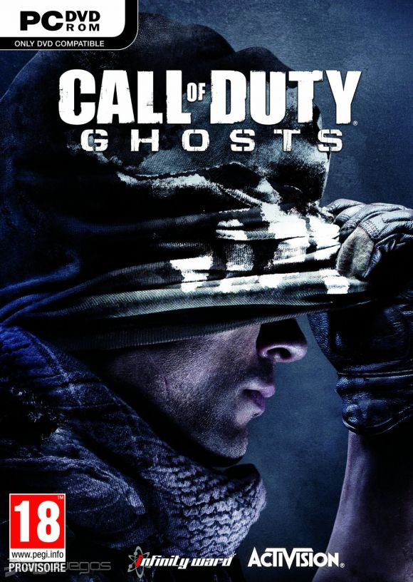

|  |
Call of Duty: GhostsPESO 34GB GENEROS Shooter | Primera persona (FPS) | Acción PLATAFORMA PC DISTRIBUIDOR Activision DESARROLLADOR Infinity Ward LANZAMIENTO 04 de Noviembre del 2013 |
Call of Duty®: Ghosts es un extraordinario paso adelante en una de las mayores sagas de todos los tiempos en el sector del entretenimiento. Este nuevo capítulo de Call of Duty® cuenta con una nueva dinámica en la que el jugador forma parte de una nación destrozada que no lucha por la libertad, sino por sobrevivir.
Un motor de nueva generación da vida a esta nueva experiencia de Call of Duty y ofrece unos niveles espectaculares de realismo y rendimiento, sin perder la velocidad y la fluidez de las 60 imágenes por segundo en todas las plataformas.